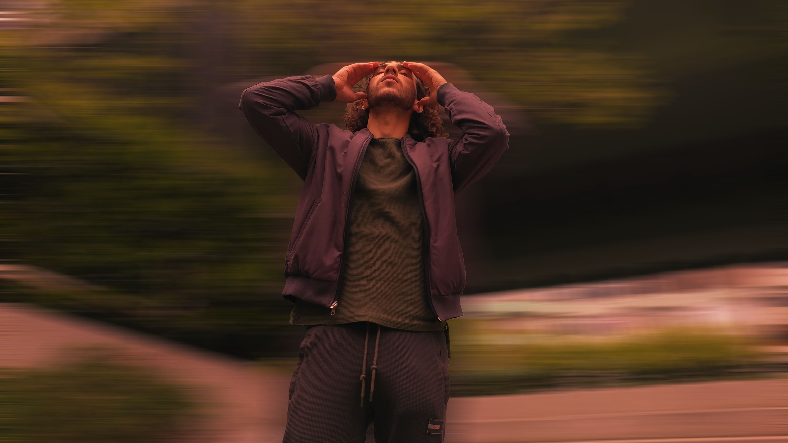

Radio Theatre
radyo tiyatrosu dinleme hobim, beni zamanda bir yolculuğa çıkaran büyülü bir deneyimdir. Sesin gücüyle şekillenen bu sanat formu, karakterlerin duygularını ve hikayenin atmosferini hayal gücümle canlandırmama olanak tanır. O eski radyo yayınlarının nostaljik ses efektleri, müzik ve oyuncuların ses tonları, beni başka bir dünyaya taşır ve zamanın durduğu bir noktada kendimi bulurum. Karanlık bir odada, gözlerimi kapattığımda, hikayenin içine gizlenmiş gibi hissederim. Bu hobim, sadece eğlenceli değil, aynı zamanda yaratıcılığımı besleyen ve hayal gücümü genişleten bir etkileşimdir. Radyo tiyatrosu, sesin sihirli dünyasında kaybolmama ve farklı zamanlarda, mekanlarda maceraya atılmama olanak tanıyan özel bir bağ kurmama yardımcı oluyor.

Graphic Design
Grafik tasarım ve Photoshop, benim yaratıcı dünyama kapılar aralayan tutkulu bir hobidir. Renklerin, formların ve metinlerin bir araya gelerek etkileyici görsel iletişimler oluşturması, beni derin bir tatminle dolduruyor. Photoshop'un kapsamlı araçları sayesinde, hayal gücümü dijital bir tuval üzerinde serbest bırakma özgürlüğüne sahibim. Her proje, benim için bir sanat eseri haline gelirken, tasarladığım grafiklerde kendimi ifade etme ve izleyiciyle duygusal bir bağ kurma fırsatı buluyorum. Renk paletleri, tipografi seçimleri ve kompozisyon, her ayrıntının özenle düşünüldüğü bir süreci içeriyor. Bu hobim, sadece teknik becerilerimi geliştirmekle kalmıyor, aynı zamanda estetik anlayışımı derinleştirip beni sürekli olarak yeni tasarım trendleri ve yöntemleri keşfetmeye teşvik ediyor. Grafik tasarım ve Photoshop ile uğraşmak, benim için bir sanatın ve ifadenin sınırsız dünyasında kaybolma ve kendimi sürekli olarak yeniden keşfetme serüvenidir.
Doing Calisthenics
Vücut ağırlığıyla yapılan bu egzersizler, fiziksel gücümü artırmakla kalmayıp, aynı zamanda zihinsel dayanıklılığımı da geliştiriyor. Her antrenman, kendi bedenimle olan bağımı güçlendiriyor ve sınırlarımı zorlamama izin veriyor. Kalisteniks, sadece kasları değil, aynı zamanda denge, esneklik ve koordinasyonu da hedef alarak bütünlüklü bir fitness deneyimi sunuyor. Bu hobimde her yeni hareketi öğrenme süreci, sabır, disiplin ve kararlılık gerektirirken, bu özellikleri günlük yaşantıma da taşımama yardımcı oluyor. Kalisteniks, benim için sadece bedenimi güçlendiren bir egzersiz biçimi değil, aynı zamanda kendi sınırlarımı keşfetme ve aşma sürecinde beni motive eden bir yaşam felsefesidir.
Solve Sudoku
Sudoku, zihinsel keskinliğimi artıran ve stresle baş etmeme yardımcı olan keyifli bir hobidir. Sayıları mantıklı bir şekilde yerleştirmek, hem problem çözme becerilerimi güçlendiriyor hem de odaklanmamı artırıyor. Ayrıca, bu oyun benim için bir tür meditasyon deneyimi, günlük hayatın karmaşasından uzaklaşma fırsatı sunuyor.

Camping
Kamp, benim için doğayla bütünleşme ve özgürlüğün tadını çıkarma yolunda bir kaçış ve tutkudur. Ormanın kucağında çadırımı kurmak, açık havada ateş başında oturmak, yıldızları izlemek, bana şehir hayatının karmaşasından uzaklaşma fırsatı verir. Kamp yapmak, sadece bedenimi dinlendirmekle kalmaz, aynı zamanda ruhumu da yeniler. Doğanın sesleri, kuş cıvıltıları ve hafif esen rüzgar, beni stresten arındırır ve içsel huzur bulmama yardımcı olur. Kamp ateşinin etrafında oturup dostlarla sohbet etmek, paylaşılan anılar ve kahkahalar, bu deneyimi daha da özel kılar. Kamp, benim için bir macera, keşif ve özgürlük alanıdır; her yeni kamp deneyimi, beni doğaya olan sevgimde bir adım daha ileri taşır.
Playing the Kalimba
Kalimba çalmak, benim için ruhsal bir serenadın ve melodik bir seyahatin kapılarını aralamak anlamına geliyor. Bu küçük enstrümanın tınıları, parmaklarımın uçlarından yayılarak sakinleştirici bir ritüeli başlatıyor. Metal kalkanlar arasındaki tuşlara dokundukça, beni adeta bir başka dünyaya taşıyan, huzur veren bir melodi yaratma gücüne sahibim. Her bir nota, hissettiklerimi ifade etme ve duygusal bir bağ kurma fırsatı sunuyor. Kalimba, yaratıcılığımı keşfetme ve müziği duygularımla birleştirme konusunda benim için sınırsız bir oyun alanıdır. Bu enstrümanla zaman geçirmek, sadece melodik bir yolculuk değil, aynı zamanda içsel bir denge ve huzur bulma sürecidir. Kalimba çalarken, benzersiz sesleri ve ritimleri keşfetmek, ruhsal bir dinginlik sağlayarak hayatın güzelliklerini daha derinden hissetmeme olanak tanır.